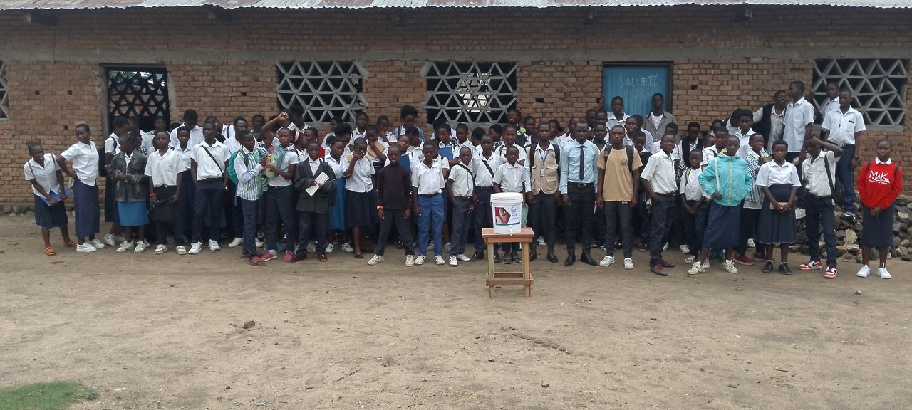
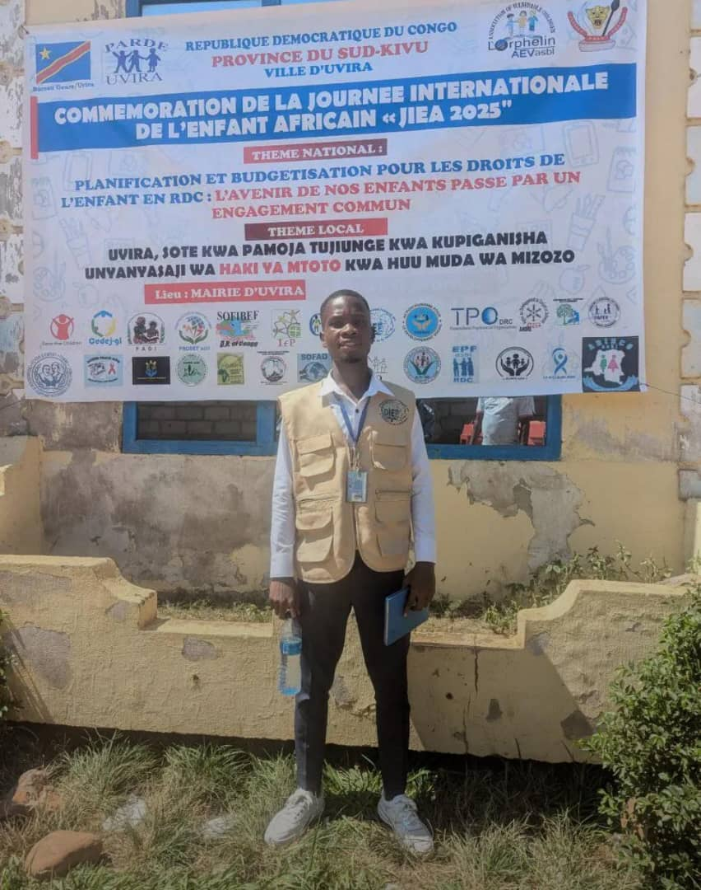
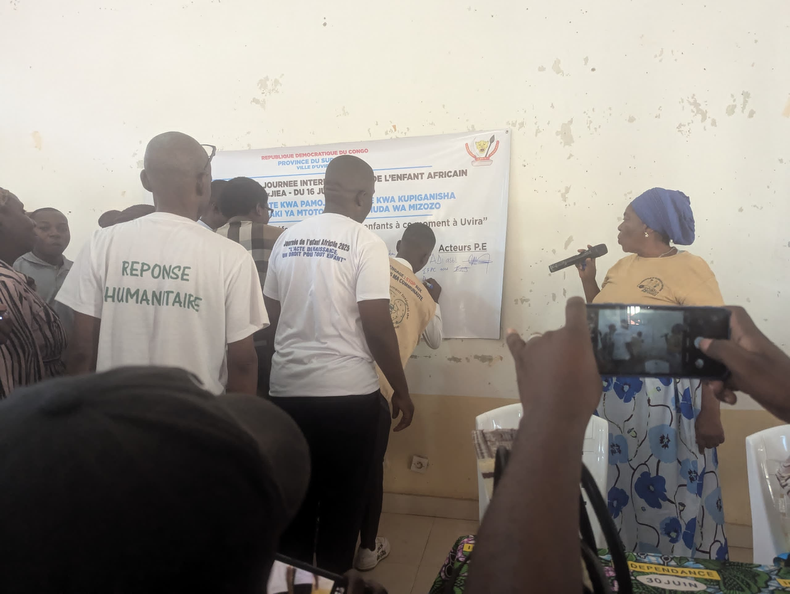
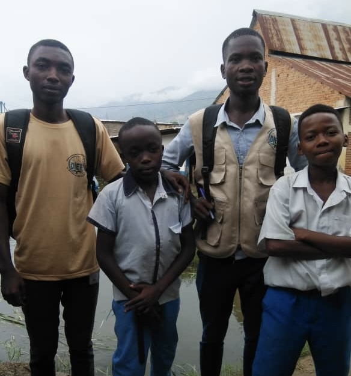

Activités de prévention et de réponse rapide aux maladies Mpox
Publié le 24/04/2025

DIEF a également sensibilisation et Distribution de kits de lavage de mains dans les écoles pour la préventionde la Mpox et du cholera pour le soutien a un environnement d'apprentissage sain et protecteur dans la zone de santé d'Uvira
Soutien aux femmes entrepreneures agricoles
Publié le 24/04/2025

Nous avons distribué 10 000 boutures de manioc et 80 Kg de haricots à des femmes entrepreneures dans l’agriculture dans le village de Katobolo, groupement de Bagana en chefferie de Buloho, territoire de Kalehe. Ces actions s'inscrivent dans notre programme de création et de conduite de parcs à bois de maniocs.
Visites et sensibilisation dans les camps de déplacés
Publié le 24/04/2025

DIEF a effectué des visites pour la récolte des besoins prioritaires dans les camps de déplacés de Katasomwa, Mirenzo, Bushaku I et II. Des sensibilisations des ménages des déplacés de Katasomwa sur les mesures d’hygiène à maintenir dans le site ont été réalisées pour lutter contre les maladies des mains sales, hydriques et autres épidémies. Nous avons également identifié les besoins humanitaires et difficultés que traversent les déplacés.
Signature de la Protéction des Enfants
Publié le 24/04/2025

DIEF a aussi signé de proteger et promouvoir les droits de l'enfant
Visites,sensibilisation et Soutien
Publié le 24/04/2025

Identification des écoles victimes de la montée des eaux du lac Tanganyika et marin yangara dans la ville d'Uvira